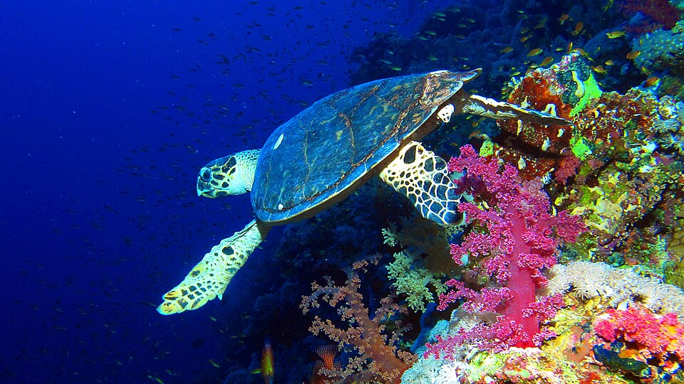
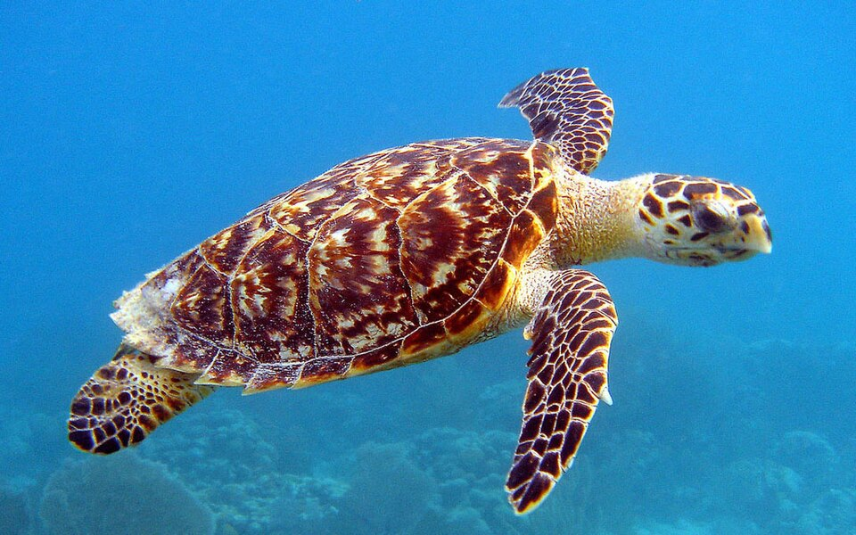

Tartaruga de Pente (Eretmochelys imbricata)



Estado de conservação: Em perigo crítico (Critically Endangered - CR), segundo a União Internacional para a Conservação da Natureza (IUCN). A tartaruga-de-pente está entre as espécies de tartarugas marinhas mais ameaçadas do mundo. A captura ilegal, a poluição dos oceanos e a destruição de seus habitats contribuíram para a drástica redução de suas populações.
Habitat: É encontrada em mares tropicais e subtropicais dos oceanos Atlântico, Índico e Pacífico. Seu habitat natural inclui recifes de coral, águas costeiras rasas, estuários, manguezais e lagoas costeiras, embora ocasionalmente possa ser vista em águas mais profundas. Os recifes de coral são especialmente importantes para sua sobrevivência, pois fornecem abrigo e alimento.
Distribuição: Possui ampla distribuição em águas tropicais e subtropicais de todo o mundo, sendo encontrada nas costas das Américas, África, Ásia e Oceania, especialmente em áreas com recifes de coral bem preservados.
Alimentação: Sua alimentação é composta principalmente por esponjas marinhas, mas também inclui anêmonas, lulas, camarões, águas-vivas, algas e outros pequenos invertebrados marinhos. Sua boca estreita e em forma de bico permite alcançar alimentos em fendas e cavidades dos recifes.
Principais ameaças:
- Captura acidental: Ficar presa em redes e equipamentos de pesca commercial.
- Comércio ilegal: Venda clandestina da carapaça para fabricação de objetos decorativos e joias.
- Perda de habitat: Destruição dos recifes de coral e degradação de praias de desova.
- Poluição marinha: Especialmente o descarte inadequado de plásticos nos oceanos.
- Mudanças climáticas: Impactos diretos nos locais de alimentação e reprodução.
- Coleta de ovos: Retirada ilegal de ovos em praias de nidificação.
Curiosidades da Tartaruga-de-Pente:
- Especialista em esponjas: É a única tartaruga marinha especializada em consumir grandes quantidades de esponjas marinhas.
- Origem do nome: Seu nome vem do formato curvado e pontiagudo do bico, semelhante ao de uma ave de rapina.
- Grandes migradoras: Pode migrar centenas ou até milhares de quilômetros entre áreas de alimentação e reprodução.
- Guardiã dos recifes: Desempenha um papel fundamental no equilíbrio e saúde dos recifes de coral.
- Longevidade: A expectativa de vida em estado selvagem é de aproximadamente 30 a 50 anos.
- Fidelidade ao berço: As fêmeas retornam à mesma região onde nasceram para colocar seus ovos.